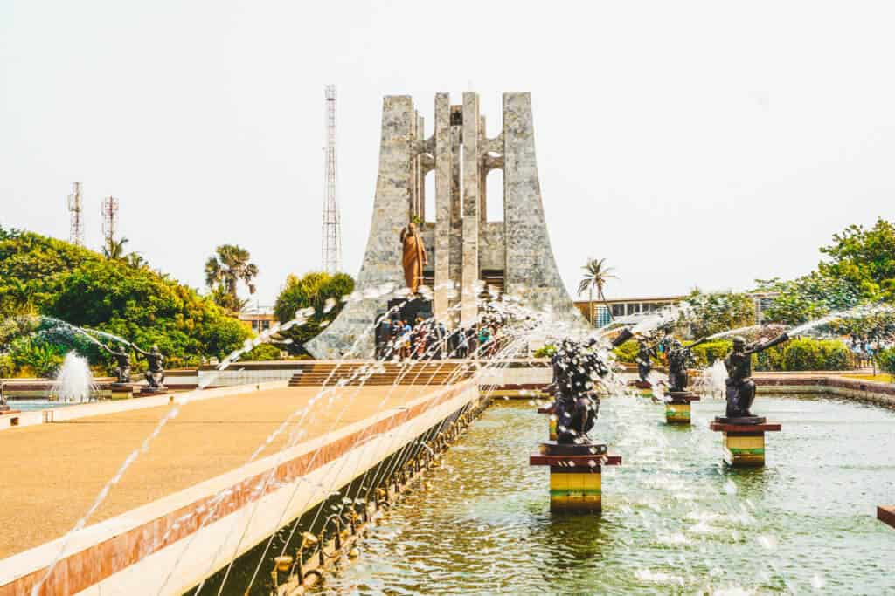

The Kwame Nkrumah Memorial Park
Dedicated to Ghana's first President, this park features a
mausoleum and museum showcasing his life and contributions
to Ghana's independence.

Makola Market
A bustling open-air market in the heart of Accra, offering a wide
array of goods from fresh produce to traditional crafts. It's a
vibrant spot to experience local commerce and culture.
Labadi Beach
One of Accra's most popular beaches, known for it's lively
atmosphere, local entertainment and beautiful coastline.
Jamestown
A historic district featuring colonial-era architecture ,
the iconic Jamestown Lighthous, and a vibrant fishing community.
It's a great place to delve into Accra's rich history.

Shai Hills Resource Reserve
Located just outside Accra, this reserve offers opportunities
to see wildlife, explore caves and enjoy hiking trails amidst
scenic landscapes.
Independence Square
One of the largest city squares in the world, it commemorates Ghana's
independence and hosts national events. The square is dominated by the
Independence Arch and the Black Star Monument, symbolizing the nation's
freedom.

Legon Botanical Gardens
A serene escape from the city's hustle, this expansive garden offers canopy
walks, bird watching, and various outdoor activities amidst lush greenry.